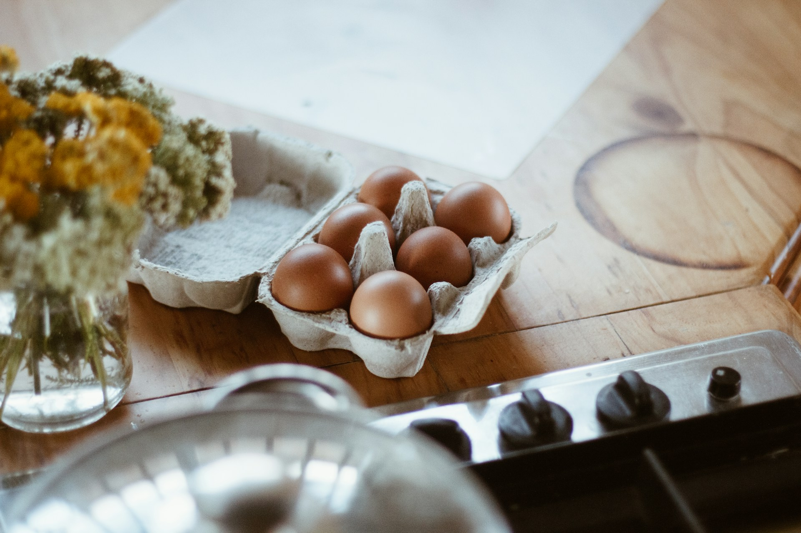

Cholina: Zapomniany składnik kluczowy dla zdrowia mózgu
Cholina to aktywny składnik fosfatydylocholiny, która z kolei jest składnikiem lecytyny. Można ją znaleźć w jajach, mięsie, kapuście, kalafiorze, owsie, soi oraz wątróbce. Należy do grona substancji lipotropowych (emulgujących tłuszcze), do której należą również inozytol, betaina i metionina. Lipotropowe składniki wspomagające wątrobę w przetwarzaniu i utylizowaniu tłuszczów i cholesterolu.
Cholina jest składową przy produkcji acetylocholiny – neurotransmitera niezbędnego do zachowania pamięci i aktywności mózgu, stymuluje wzrost tkanki mięśniowej oraz umożliwia produkcję kwasów żołądkowych!
Jej główną funkcją jest wpływ na integralność błon komórkowych – transport Z i DO komórki. Jest pomocna w takich jednostkach chorobowych jak astma, utrata wagi, zmniejsza stłuszczenie wątroby itp.
Jakie mogą być objawy niedoboru? Na przykład: suchość śluzówek, mgła mózgowa, pobudzenie, problem ze skupieniem, zaburzenia mięśnia sercowego, problemy ze zdrowieniem przewodu pokarmowego.
Dowody z badań potwierdzają, że spożycie choliny przez matkę ma kluczowe znaczenie dla neurogenezy, funkcji poznawczych i rozwoju układu wzrokowego, oraz chroni mózg płodu przed stresorami. Suplementacja choliny poprawia wyniki w zaburzeniach spektrum alkoholowego płodu i łagodzi patologię w modelach Alzheimera.